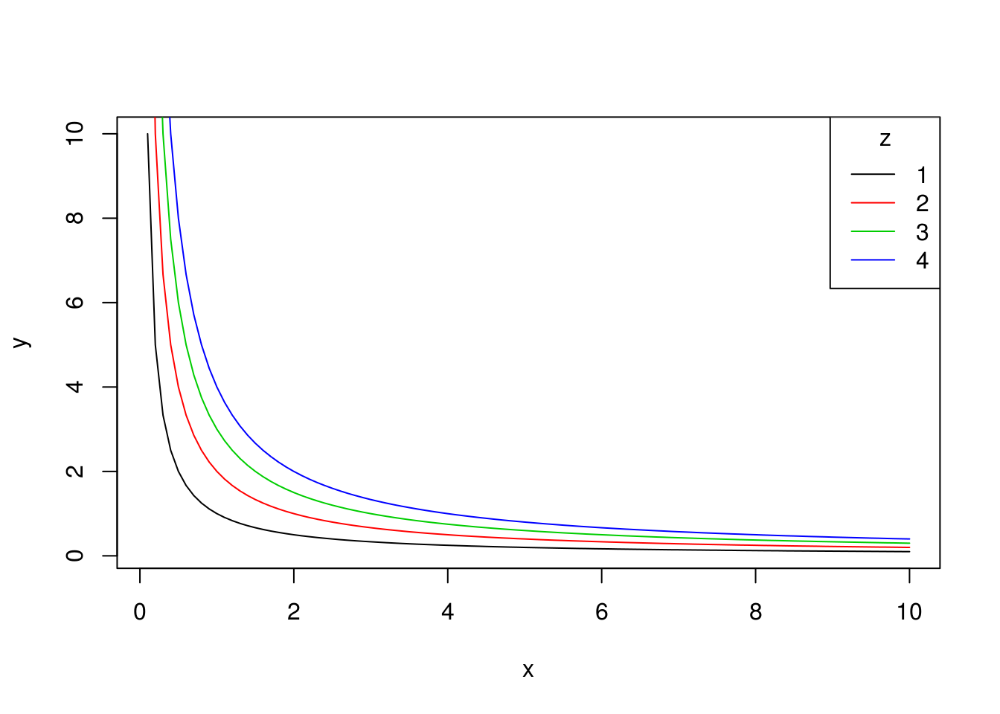
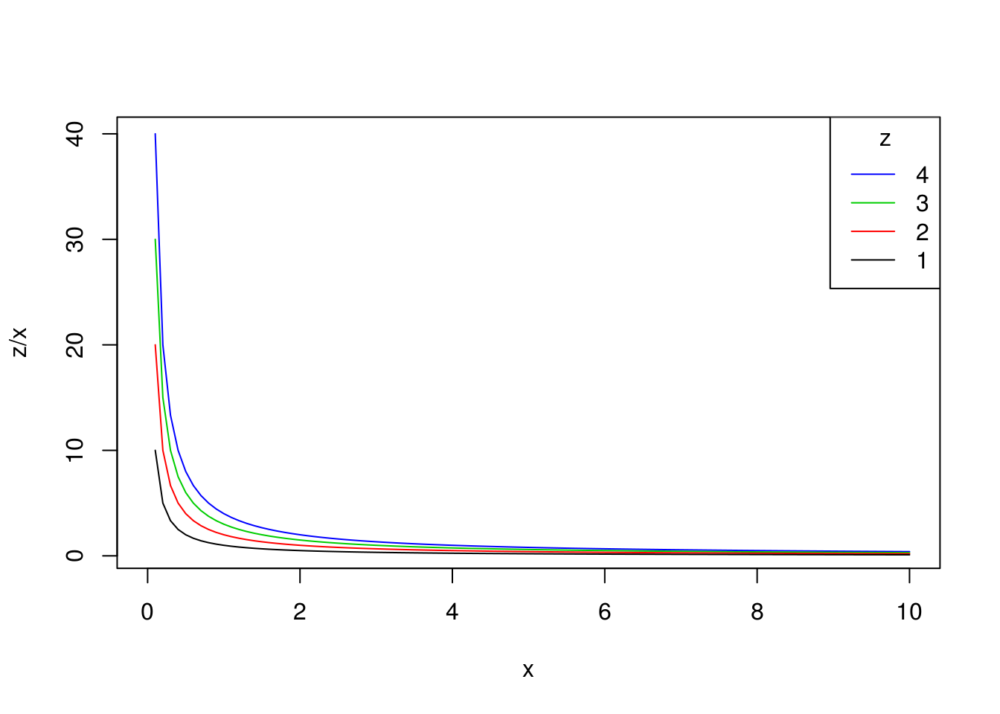
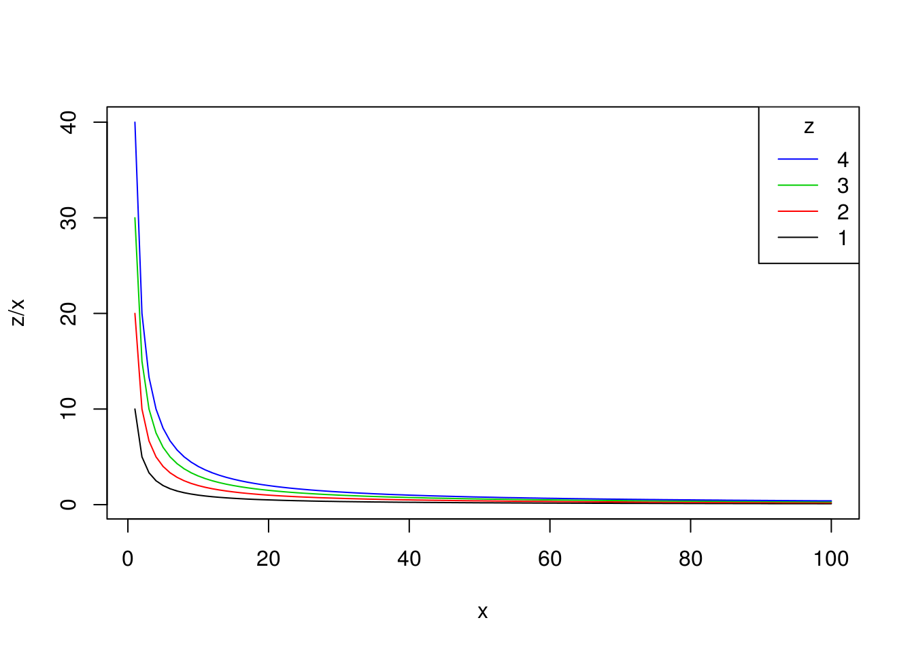
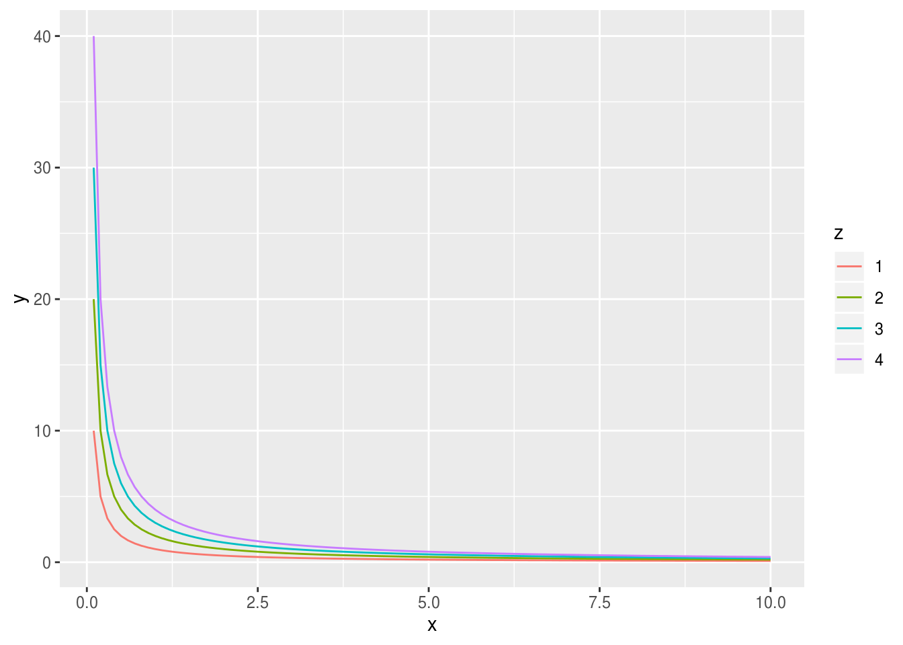
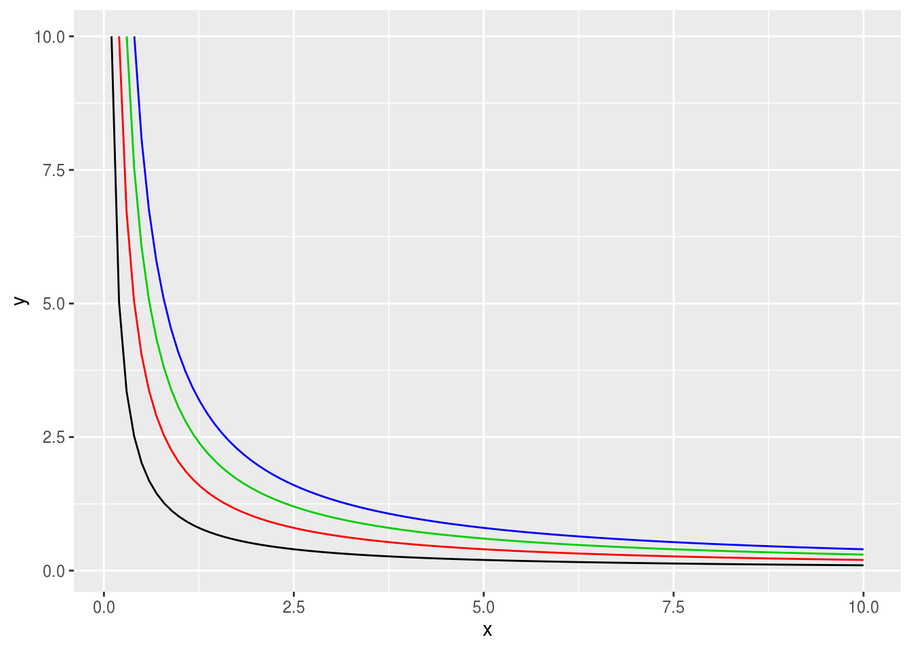

1 作图
1.1 曲线簇
题目：函数 \(xy = z\)，\(z\) 取值为 1、2、3、4， \(x\) 和 \(y\) 的取值区间为 (0, 10]，如何画出这4条曲线？
B 版
x <- seq(0.1, 10, by = 0.1)
plot(x, 1 / x,
type = "l", xlab = "x", ylab = "y"
)
for (z in 2:4) lines(x, z / x, col = z)
legend("topright",
legend = 1:4, col = 1:4,
lty = 1, title = "z"
)
# or
for (z in 4:1) {
curve(z / x, 0, 10, add = z < 4, col = z)
}
legend("topright",
legend = 4:1, col = 4:1,
lty = 1, title = "z"
)
# or
matplot(outer(
seq(0.1, 10, by = 0.1), 1:4,
function(x, a) a / x
),
xlab = "x", ylab = "z/x", type = "l",
col = 1:4, lty = 1
)
legend("topright",
legend = 4:1, col = 4:1,
lty = 1, title = "z"
)
T 版
library(ggplot2)
library(magrittr)
expand.grid(
x = seq(0.1, 10, by = 0.1),
z = 1:4
) %>%
transform(y = z / x, z = factor(z)) %>%
ggplot() +
geom_line(aes(x, y, color = z))
# Or
out <- ggplot(data.frame(x = c(0, 10)), aes(x))
for (i in 1:4) {
out = out +
stat_function(fun = function(.x ,z) z/.x,
color = i,
args = list(z=i),
xlim=c(i/10,10) )
}
out